BASC0005 Quantitative Methods 2: Data Science and Visualisation
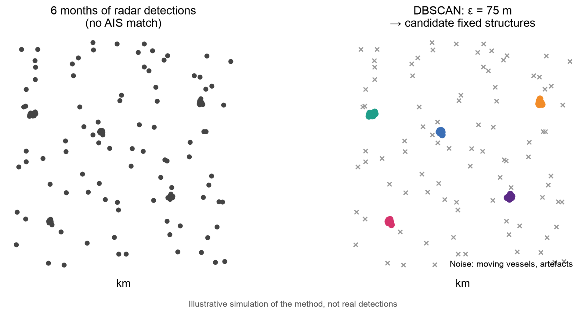
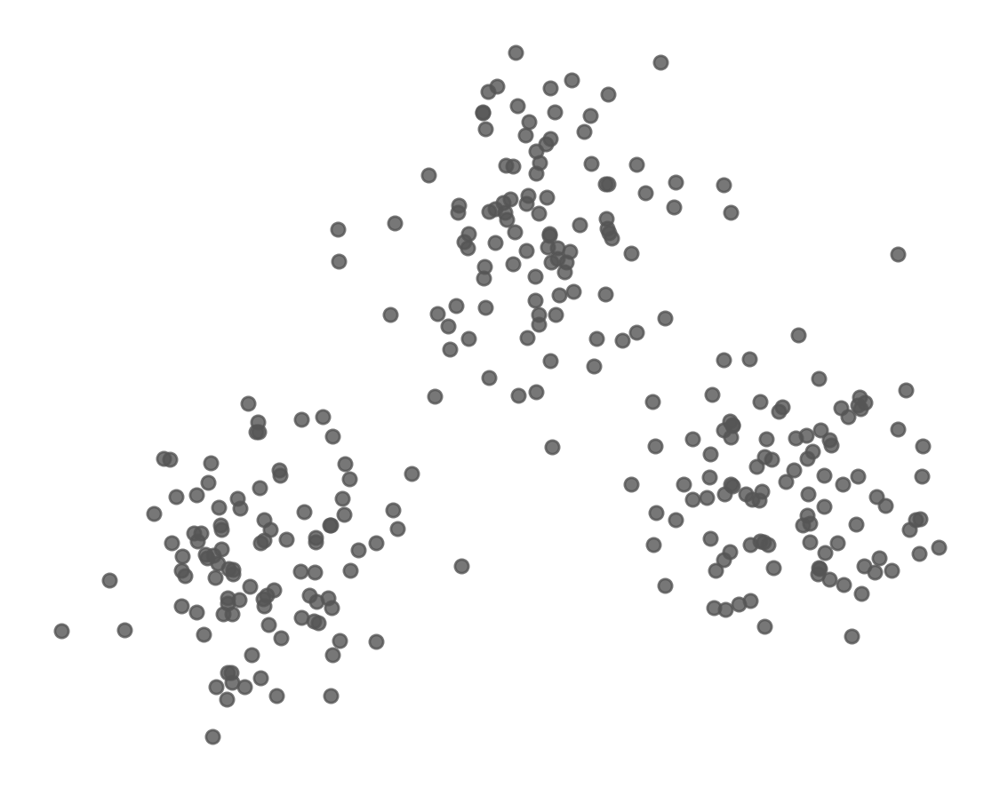
Goal: make each cluster as tight as possible (minimise the total squared distance from each point to its centroid)
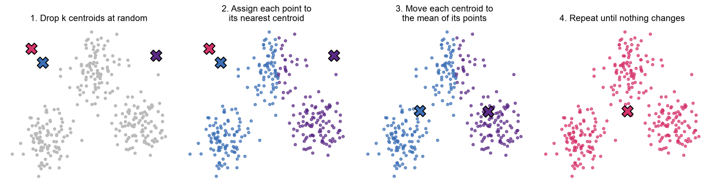
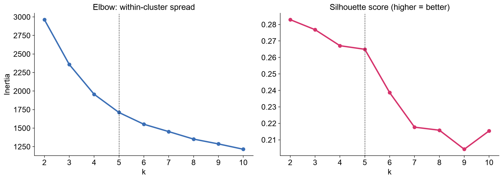
The algorithm outputs numbers 0–4. The names are ours: an interpretation of these profiles, not a fact about the data
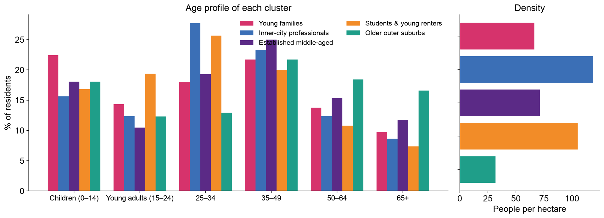
32 boroughs, same 7 features. The height of each join shows how different the merged groups are. The dotted line cuts the tree into 3 clusters
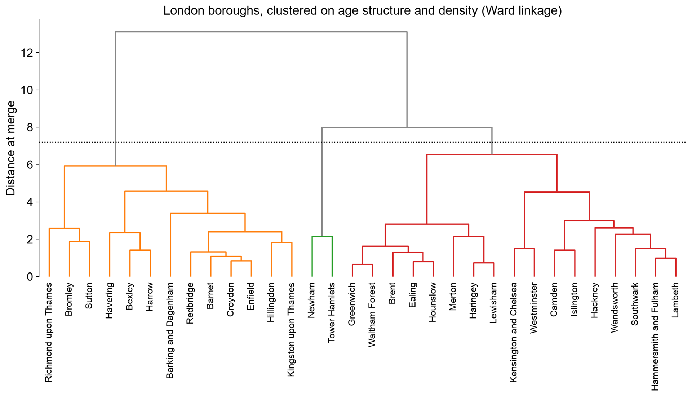
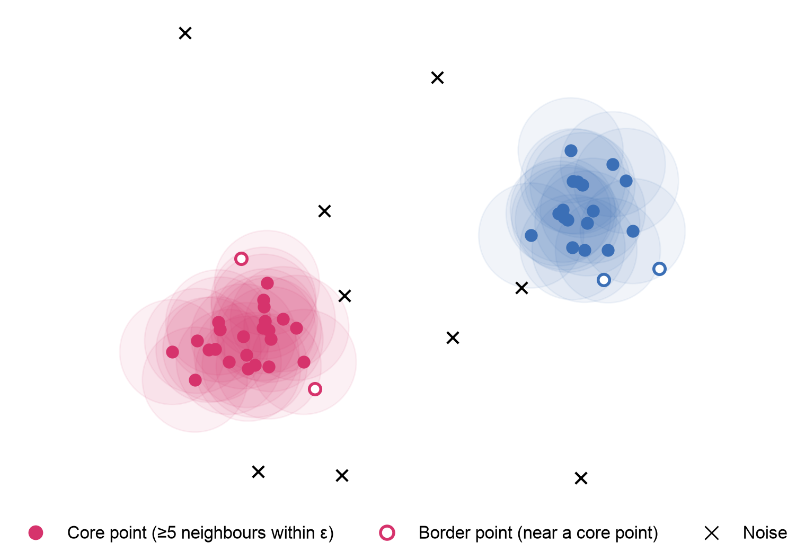
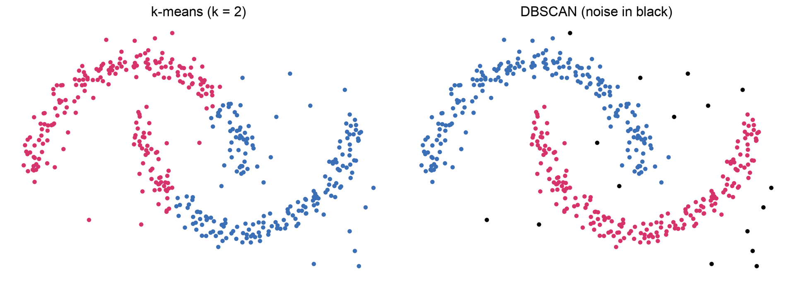
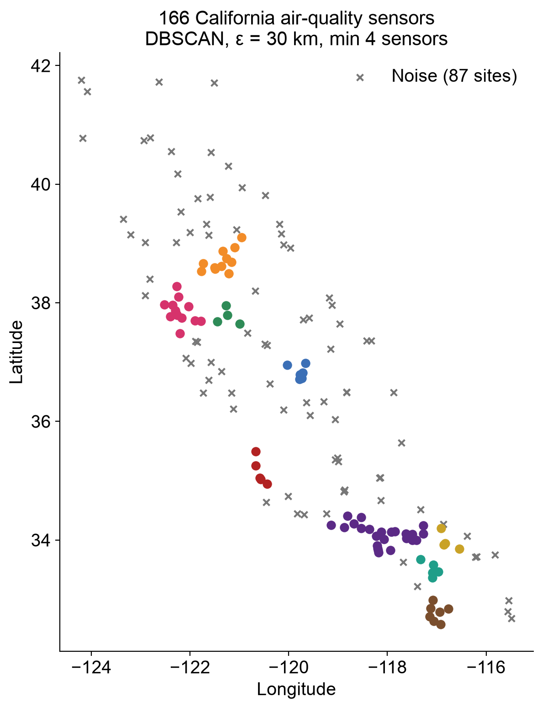
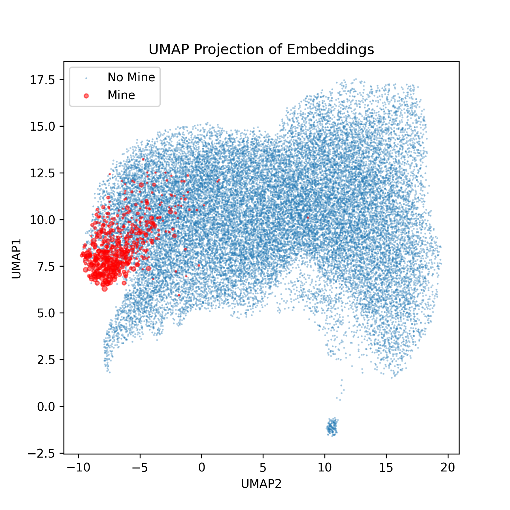
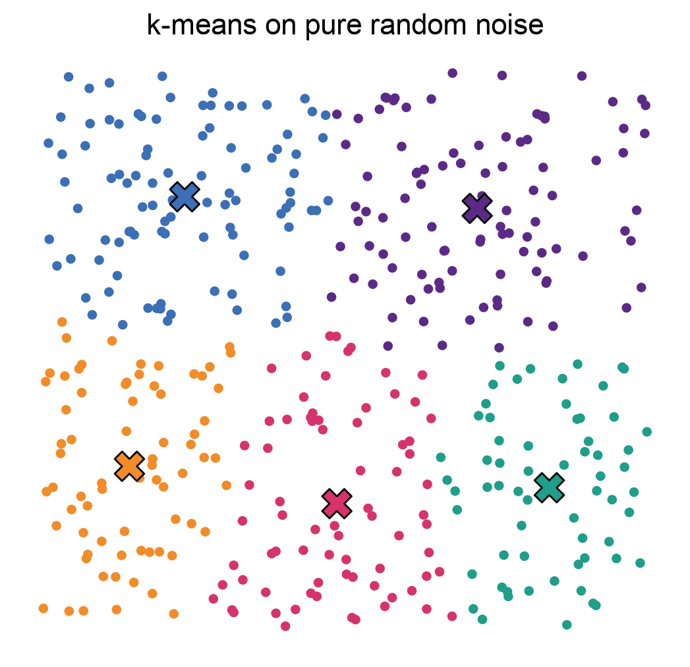
| K-means | Hierarchical | DBSCAN | |
|---|---|---|---|
| Choose k in advance? | Yes | No (cut the tree) | No (choose ε and min points) |
| Cluster shapes | Round, similar size | Depends on linkage | Any shape |
| Handles noise? | No: every point assigned | No | Yes: labels outliers |
| Speed on big data | Fast | Slow | Fast with spatial indexing |
| Good for | Segmenting areas or customers | Small data; seeing structure | Spatial points; finding hotspots |
o.ballinger@ucl.ac.uk
BASC0005 Quantitative Methods 2